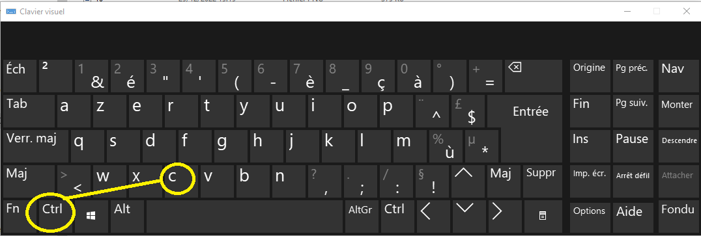
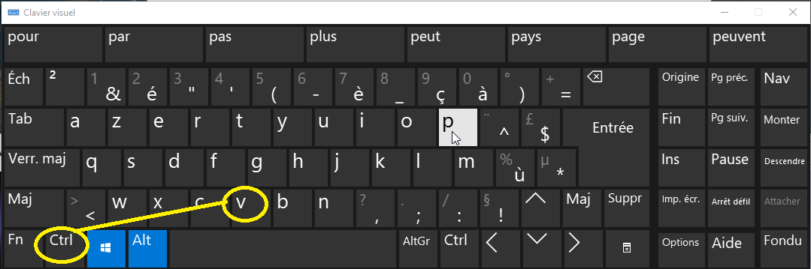
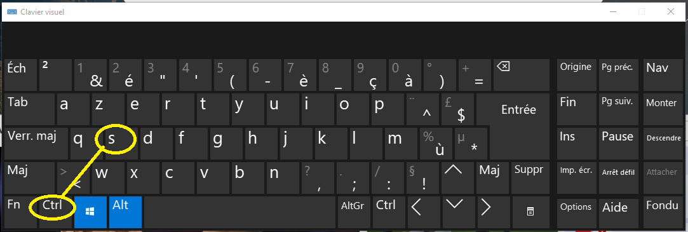
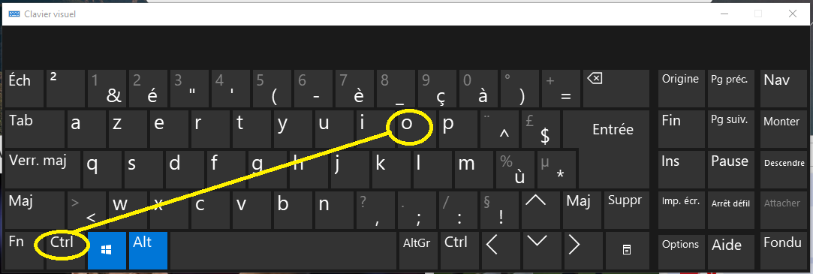

les racourcis clavier sont des enselble et des combinaisons de touches qui facilitent l'exploration et la naviguation sue l'ordinateur ici nous allons vous prosez quelques un qui vous seront utile
Un naviguateur est tout simplement un logiciel gratuit qui permet de consultez les pages web sans rien d'autre à dire
et ici nous allons vous donnez le top 3 à utiliser immédiatement:
Chrome est un navigateur web propriétaire développé par Google depuis 2008, il fonctionne sur toutes les platformes Windows,Linux et Mac
Il est annoncé le 1er septembre 2008, la veille de la sortie de la première version bêta. La première version stable est quant à elle dévoilée
le 11 décembre 2008. Selon l'institut StatCounter, Google Chrome devient en juin 2012 le navigateur le plus utilisé dans le monde, avec environ un
tiers des utilisateurs. En mars 2021, sa part de marché est de plus de 65 % toutes plateformes confondues.
Mozilla Firefox est un navigateur web libre et gratuit disponible pour PC (Windows, macOS, Linux, BSD, etc.) et mobiles (Android, iOS), développé et distribué par la Mozilla Foundation depuis 2003
télécharger fire foxet pour le dernier naviguateur on vas vous prézenter le tout nouveau logiciel de naviguation qui est recommandé pour windows 10 c'est windows edge ce dernier est considérer comme le meilleure naviguateur web pour ces caractéristiques spéciale vous pouvez le télécharger d'après le lien si dessous
télécharger microsoft edge